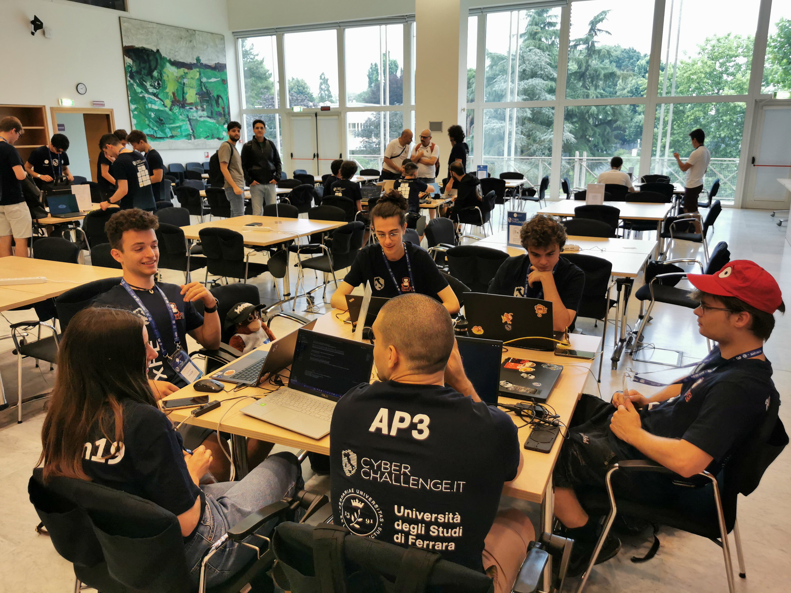
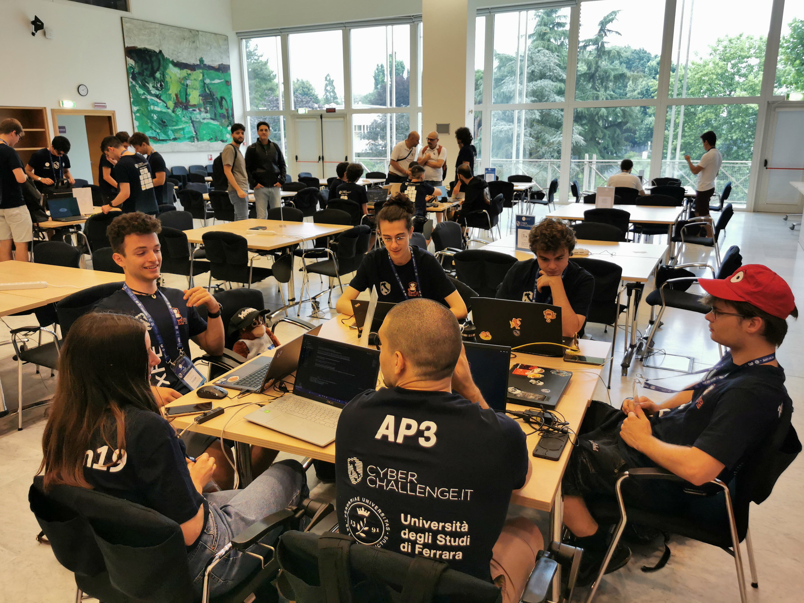

CYBERCHALLENGE
PERIODO DI FORMAZIONE CYBERCHALLENGE
2023
Ho partecipato al programma di addestramento del progetto Cyber Challenge 2023 presso il Dipartimento di Matematica e Informatica dell'Università di Ferrara. Questo progetto è stato organizzato dal Cyber Security National Laboratory del CINI (Consorzio Interuniversitario Nazionale per l'Informatica) e mi ha impegnato per un totale di 75 ore di formazione.
(maggiori informazioni)

COSA HO IMPARATO
ARGOMENTI DI STUDIO CON RELATIVA PERCENTUALE DI APPROFONDIMENTO
GARE
2023
Oltre alla mia partecipazione a competizioni minori che hanno contribuito ad inserirmi nel contesto competitivo, come la serie di eventi "Cyber Cup", le esperienze principali che vorrei sottolineare sono le seguenti: inizialmente ho preso parte a una competizione locale, in modalità individuale della durata di 8 ore. Tale evento si è svolto a Ferrara, dove sono riuscito a classificarmi al 4° su 20 posto. Questo risultato è stato di grande importanza perchè mi ha dato la possibilità di far parte della squadra ferrarese di CyberSecurity 0xFE, di conseguenza mi ha garantito l'opportunità di partecipare alla competizione nazionale di sicurezza informatica all'interno del progetto "Cyberchallenge". Durante questa fase, le squadre hanno affrontato una serie di sfide in modalità attacco/difesa contro le altre 44 università partecipanti in Italia. Nonostante la competizione estremamente agguerrita, siamo riusciti a posizionarci al 22° posto (Visualizza la classifica nazionale), ottima posizione per essere il secondo anno di partecipazione da parte di unife, dimostrando così le nostre competenze e il nostro impegno nel campo della sicurezza informatica.
(maggiori informazioni sulla gara nazionale)
 
TUTORAGGIO PERCORSO DI FORMAZIONE
2024
Grazie ai miei successi e alla mia esperienza con la squadra nazionale 0xFE, ho avuto l'opportunità di condividere le mie conoscenze, focalizzate principalmente su Network Security, Software Security e Attacco/Difesa, durante i laboratori del percorso di formazione della CyberChallenge del 2024. Questa esperienza mi ha permesso di trasmettere esperienze e informazioni preziose, contribuendo così a migliorare le prestazioni della squadra di quest'anno rispetto ai risultati che ho ottenuto personalmente.